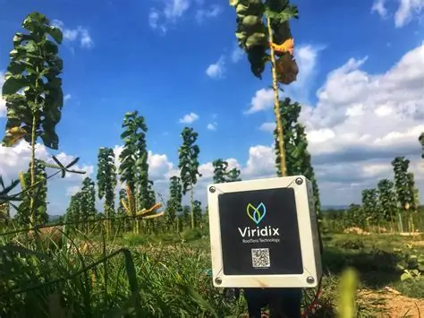
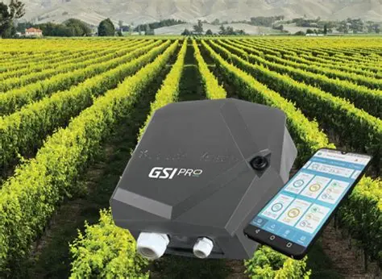
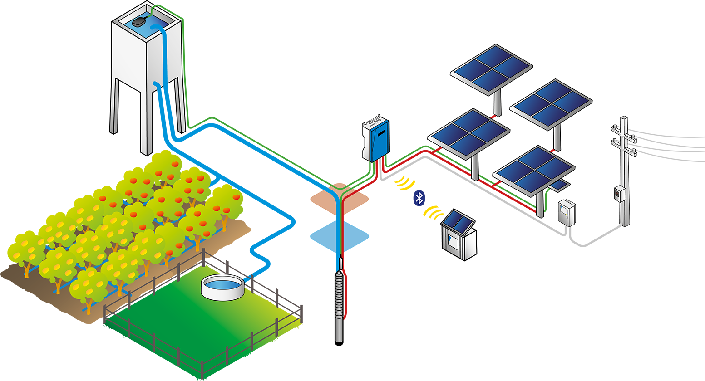
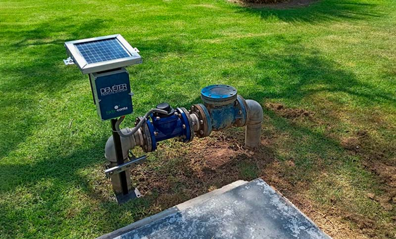

Los sensores de humedad del suelo permiten medir la cantidad de agua disponible para las plantas. Con esta información, los sistemas de riego pueden activarse solo cuando es necesario, evitando el desperdicio.

Los controladores electrónicos regulan el flujo de agua y la presión en los sistemas de riego. Pueden programarse para horarios específicos o integrarse con datos climáticos.

Muchos sistemas modernos utilizan paneles solares para alimentar bombas y sensores, reduciendo costos de energía y promoviendo la sostenibilidad.

Los sistemas de riego inteligentes se conectan a internet y permiten monitorear y controlar el riego desde aplicaciones móviles, integrando datos de clima y predicciones agrícolas.
